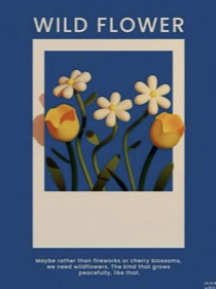

Discover
자료를 수집하고 핵심 독자와 가장 중요한 질문을 정의했습니다.
04 · Final Project

데이터에서 이야기를 발견하고, AI로 시각화해 하나의 디지털 콘텐츠 경험으로 연결한 최종 프로젝트.
Project Facts
Overview
경제 정보는 정확해야 하지만 어렵게 느껴질 필요는 없습니다. 이 프로젝트는 매일 쏟아지는 뉴스에서 핵심 흐름을 선별하고, 독자가 한눈에 이해할 수 있는 기사와 이미지, 짧은 영상으로 재구성하는 데서 출발했습니다.
AI는 속도를 높이는 도구로만 쓰지 않았습니다. 질문을 구체화하고 서로 다른 형식 사이의 연결을 실험하는 창작 파트너로 활용했습니다.
관찰한 내용을 구조화하고, 시각 언어로 바꾼 뒤, 사용자 관점에서 다시 다듬었습니다.
자료를 수집하고 핵심 독자와 가장 중요한 질문을 정의했습니다.
정보를 문장, 이미지, 장면의 언어로 각각 번역했습니다.
형식 사이의 톤을 맞추고 피드백을 반영해 완성도를 높였습니다.